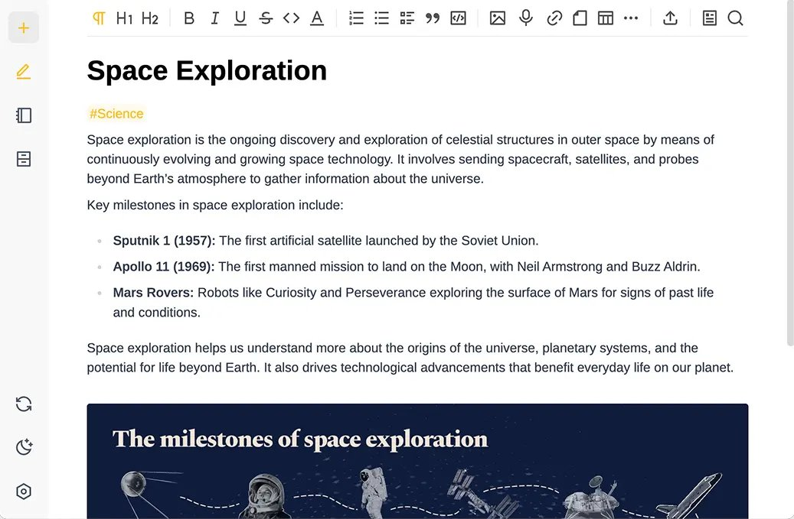
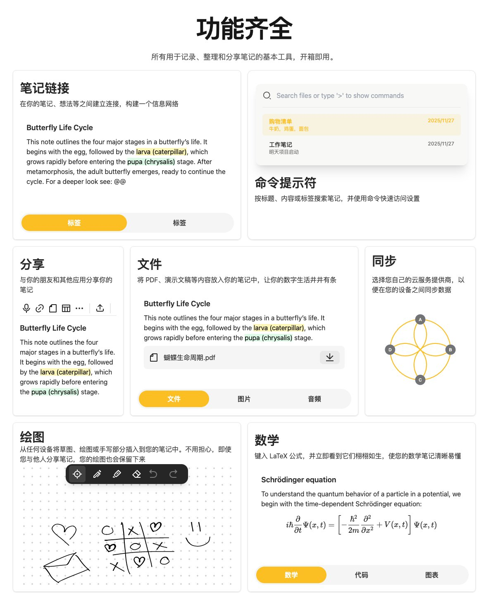

たたなこ🏳️⚧️🍥
@tatanakots
最隐私的笔记本其实是Paper Notebook
永远没有任何人可以远程访问你的笔记本
你可以将其放入保险箱中
虽然同时只能有一名用户访问笔记本，而且数据修改并不方便


GitHubDaily
@GitHub_Daily
如果你有一些比较隐私的数据，放在 Notion、Obsidian 这些云端笔记工具上，害怕数据泄露。
可以看一下，Beaver Notes 这款开源笔记应用，所有笔记都存储在本地设备上，不经过任何第三方服务器。
同时支持 Markdown 语法编写、笔记链接、标签分类等实用功能，还能给重要笔记加密上锁。 https://t.co/Lx2n6fn3Z4